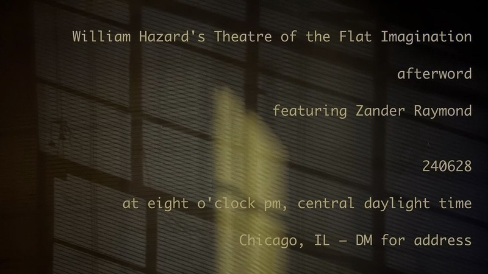

Theatre of the Flat Imagination: afterword will occur at eight o'clock pm, central daylight time, on June 28th, 2024 and will feature performances by Zander Raymond & me. If you'd like to attend this event, please get in touch with me by email, and I'll send you the address.
williamthazard [at] pm.me